Hos familien SCHICKEL d. 28. august - d. (pas)
august + september
24-30. September
Hej og velkommen til en ny uge.
I torsdags havde vi idræt(eller, "sport") for første gang. Det var i hvert fald det eneste fag jeg elsker mere end hjemme i Danmark, fordi her havde vi ikke dumme teori-ting om hvorfor knæet ikke bøjer fremad. Men vi bevægede os rent faktisk. Nå, men nok om det.
Lad os snakke om ugens højdepunkt. Oktoberfest..
Jeg må godt nok sige at det er stort. Der strømmede flere tusind mennesker ind af gangen, og så ikke for at snakke om øl-teltene. Miro(Drengen fra Finland som jeg var der sammen med) og jeg stod på et tidspunkt i kø for at komme ind i det største telt, men stod helt stille i 10 minutter indtil der kom en mand og sagde at nu måtte vi komme ind, og at vi skulle gå stille og roligt og IKKE løbe..
To sekunder senere spænede alle ind igennem hegnet. Det fik manden så hurtigt stoppet, og advarede os om at hvis vi ikke gik stille ind, kom ingen af os ind. Så kom vi så ind og gud hvor var der mange mennesker. Jeg ville gerne vise de billeder jeg har taget, men jeg tvivler på at i vil se billeder at folks rygge. Der var seriøst ikke andet end mennesker. På et tidspunkt spottede jeg en mand som prøvede at snige et øl glas ud af teltet. Han blev så stoppet og råbt af mens han fik en bøde for glasset.
Så kom vi så ud af teltet bagefter hvor vi så prøvede at lede efter dem vi skulle mødes med.(En fra softlanding campen med dem hun boede hos i weekenden) Dem fandt vi så 10 min senere, De stod så i kø for at komme der ind hvor vi lige havde været.. Åhhh gud, kø igen. Der kom vi så ret hurtigt ind trods køen. Så fandt vi så med lidt til meget besvær en bænk og fik sadt os ned. Der sad vi så og hyggede indtil jeg skulle med toget fra banegården kl. 20.00
Der var mega mange attraktioner såsom: Radiobiler, pariserhjul, store rutchebaner, noget der lignede det gyldne tårn fra tivoli, en snore rundt ting højt oppe i luften og så en masse boder med ting.. Du ved, tivoli agtigt. Men UMULIGT at komme frem fordi man stod i kø 100% af tiden. Man flyttede sig nærmest ikke. Helder ikke ude i midten på den store gade.
Oktoberfest.. Det var vel sjovt men ikke noget jeg gør igen. "Been there done that" Så skal det være noget mindre som f.eks. "Ingolstadt volksfest"
17-23. September
Jeg har ikke rigtigt så meget at sige om denne uge.. Der er ikke rigtigt sket så meget. Vi havde en eller anden "WanderTag" i skolen hvor vi spillede minigolf. Men ellers var det ret kedeligt.
Jeg var til bordtennis igen såååeh.. Ja.
Nu er det endelig begyndt at blive koldt, vi har haft en masse storm her på det seneste..
Ja, jeg sidder her søndag aften og skriver det her, men jeg er egentlig ret træt, såååeh godnat.
JO...! Så er jeg begyndt at læse en bog.. Tænk engang! Marius, ham der læser bøger..
Godnat.
11-16. September
Dette var min første skoleuge i Tyskland. Og manner hvor er det danske skolesystem meget bedre og nemmere på alle måder.
For det første: Jeg havde ikke fået noget som helst information overhovedet. Jeg måtte selv finde ud af hvor jeg skulle gå hen hver gang.
Og for det andet: der var nogle fag som jeg skulle vælge som jeg ikke have nogen anelse om at jeg skulle vælge.
Nå, men hvordan er ugen gået spørger du? Ja, altså.
Den første dag var lidt akavet fordi ja.. Nye mennesker og jeg kunne ikke så godt forstå dem, men dagen bestod af "informatik" i en time, så derefter en pause i en time. Og så sluttede vi af med 20 minutters dansk og fik fri kl. 11.10.
Dagen efter skulle vi åbenbart i kirke. Det var noget skolen gjorde tre gange om året: I starten, ved påske, og i slutningen af året, som en slags afslutning. Det var lidt kedeligt men ellers meget fint. Så havde vi engelsk anden dag.. Det var nemt. Og vi fik fri kl. 12.25
Og forresten, det skal lige siges at vores skoletaske består af en notesblok og en blyant.. Ja, det er alt.
Tredje dag, altså torsdag skete der ikke så meget. Vi havde lidt matematik og lidt kemi. Så havde vi "Wirtschaft" som er en slags økonomifag... Ja, jeg fattede nada. Vi skulle have haft fri kl. 13.00. Men min kemi lærer og min fysik lærer var der ikke, så jeg fik fri kl. 11.00. Så gik jeg en lille tur.
Fredag var nok den sjoveste dag. Vi startede med musik, så biologi. Så spansk... Ja, det var enten Spansk(for begyndere) eller latin og fransk som var deres tredje år.. ja, nej tak. Så jeg fik spansk, og det var nu meget spændende. "Hola amigos" Efter spansk holdte vi "ciesta". Så sluttede vi af med tysk og engelsk, og fik fri kl. 13.00.
Lørdag var vi på "drengetur" i München og se vigtig fodboldkamp mod "Bayer 04 Leverkusen". Ja de fik tæsk 3-1. Og så var der mig der uden at vide at München fans hader gul- tog en gul trøje på ind på kampen.. Og gæt hvor vi stod.
Midt i sydfløjen blandt alle de hardcore bayern münchen fans. Ups.
Såeeeeh.. Ja, det er hvad jeg sådan set har brugt min uge på. Vi ses ved på næste søndag så.
d. 7. September
Der er ikke sket så meget her på det seneste, og jeg er faktisk begyndt at blive træt af ferie. Men så er det godt at der er skole på Tirsdag.
I aftes var vi i biografen og se en rigtig bayersk film.
Alt er jo "rigtig bayersk" her nede i Bayern. Filmen hed "Sauerkraut koma" Det var var en krimi/komedie om en politibetjent og hans venner der finder et lig og noget, men udover det var der bare mange sjove jokes og sådan noget i. Den var nu meget god. Og nu spørger i alle sikkert: "Men Marius, Fortod du dog overhovedet noget af den "bayerske" film"
Svaret er nej..
Bare nej. Men! Jeg havde dog øjne, så jeg kunne sagtens følge med i handlingen.
d. 2. September
I dag stod vi op kl. 7.....
Vi skulle nemlig nå toget til München som gik kl. halv 9. Det var fordi vi skulle ind til noget kirke noget. Så da vi efter en time i tog var nået til München, fandt vi kirken og var til det der "kirke noget".
GUUUUD! hvor var det kedeligt. (Så i hvad jeg gjorde der? Jeg bragte gud på banen) Nå! Men det var en gammel mand som bare snakkede og snakkede løs i flere timer!!!
Bagefter fik vi os et velfortjent frokost måltid. Jeg fik noget der hed en "Käsespätzle".
Og det smagte mega godt. Det var sådan set bare pasta døbbet i ost. Ost OVERALT! Og så en smule salat.
Efter måltidet, tog vi hen til et slot med en masse gamle ting. Det var noget med en kongelig familie engang, som bestod af italienere, franskmænd og nogle tyskere. Og sådan noget. Det var svært at forstå kvinden i den tyske audio-guide. Meeen det var nu meget fint. Så fik vi set det, og så kan vi krydse "gamle kedelige slotte" af listen i ¨München". Så fik vi noget at drikke og tog hjem.
BILLEDER
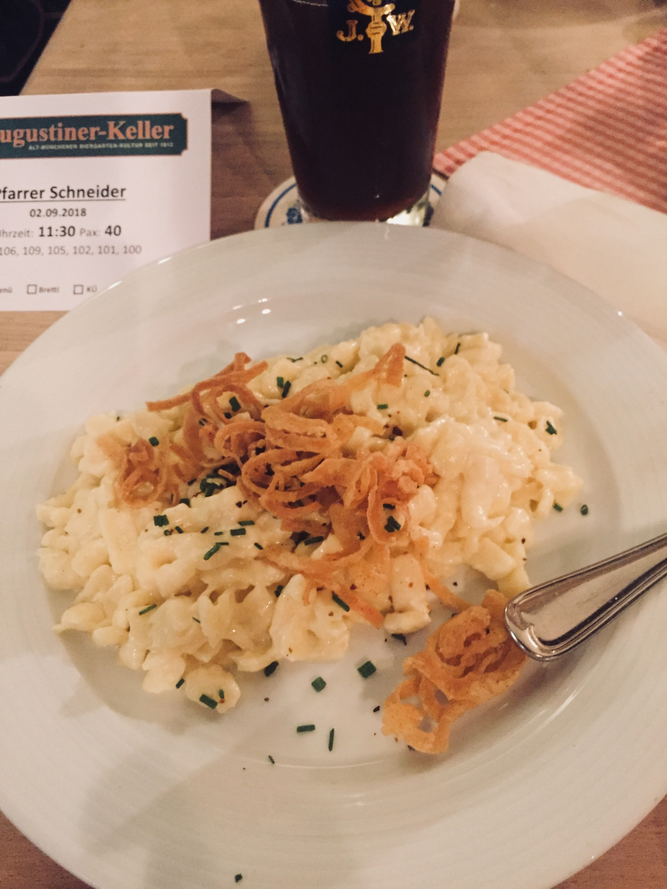
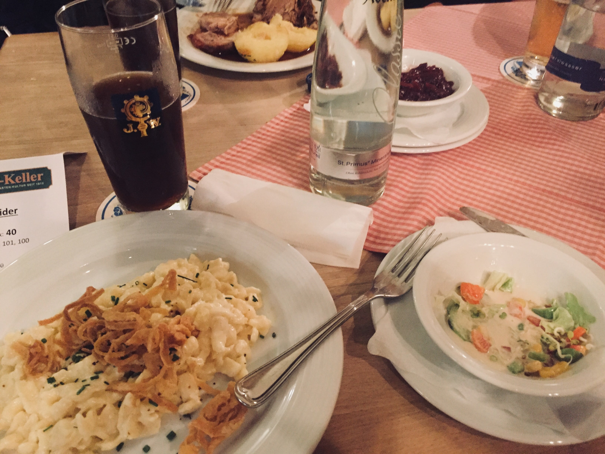
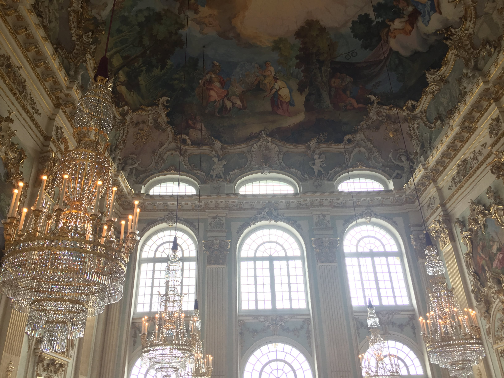
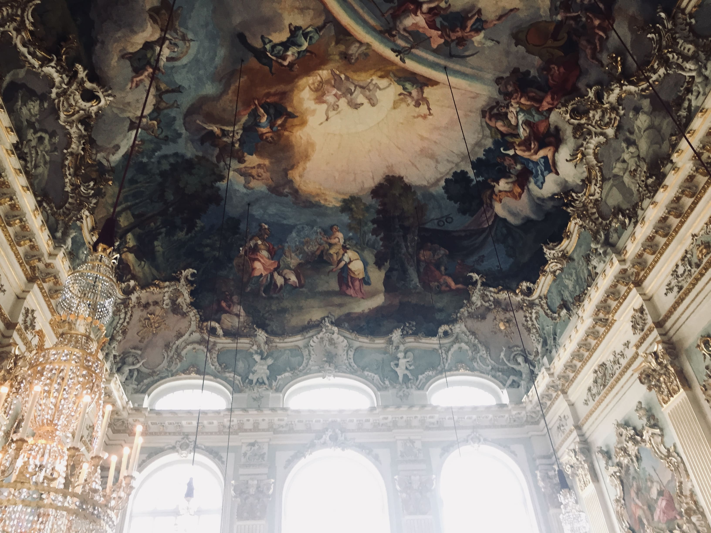
d. 1. September
I morges kl. 05, var der en gigantisk eksplosion i Ingolstadt. Det var en gas-beholder 20 km. væk fra hvor vi bor, som sprang i luften. Hældigvis kom ingen til skade.
Jeg, var så blot den eneste i familien, eller nærmere det meste af byen der ikke hørte noget og bare sov igennem det. Jeg har nemlig været meget træt her på det seneste, det er måske alt det nye.. Eller sådan noget.
Så i eftermiddags var vi til noget meget bayersk traditionelt kuluralt stads. Du ved.. Hvor folk kommer og kigger på gammelt skrammel og drikker fadøl og spiser currywurst sammen.
Det var nu meget hyggeligt. Men koldt.. Vinteren har endelig langt om længe ramt Tyskland. Vi havde kun 14 grader!!
d. 31. august
I morges var vi inde i storcentret "west park" og købe hæfter ind til skole. Her får man dem jo ikke bare leveret gratis. Så fik vi en Döner, den var nu meget god.
Bagefter tog vi ind i byen og så viste de mig lidt rundt, jeg fik set en del af skolen og sådan noget. Det var nu meget fint.
Så om aftenen var vi ude og sætte valgplakater op rundt omkring i byen, fordi Mathias åbenbart skulle stille op til et eller andet valg-stads.
Det var så der at vi lige pludselig så noget røg stige op mod himlen, ikke så langt fra hvor vi var.
Da vi kom tættere fandt vi så ud af at der var en GIGANTISK ildebrand i et stort hus.
Det så helt vildt ud. Nå men da det var overstået og vi havde sat de fleste plakater op, kørte vi hjem og gik i seng.
d. 29. august
Dagen efter, havde Mathias,(Faren) en "historie-sightseeing" tur for små børn (8-12 år) Der kom Korbinian og jeg så med. Så spillede vi lidt fobold spiste frokost, og så tog Korbinian, mig, og to af hans venner ud og badede i Ingolstadt Freibad kl. 15.00.
Her har jeg lige lagt et par billeder ind af mit værelse og turen i Ingolstadt.
BILLEDER
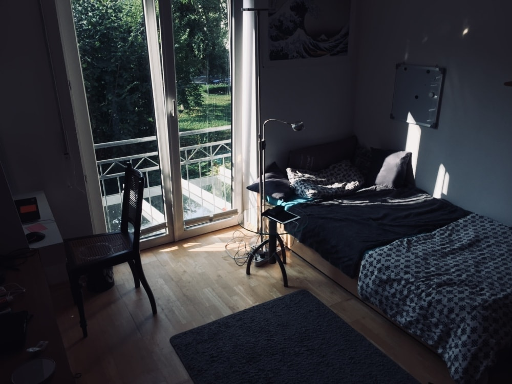
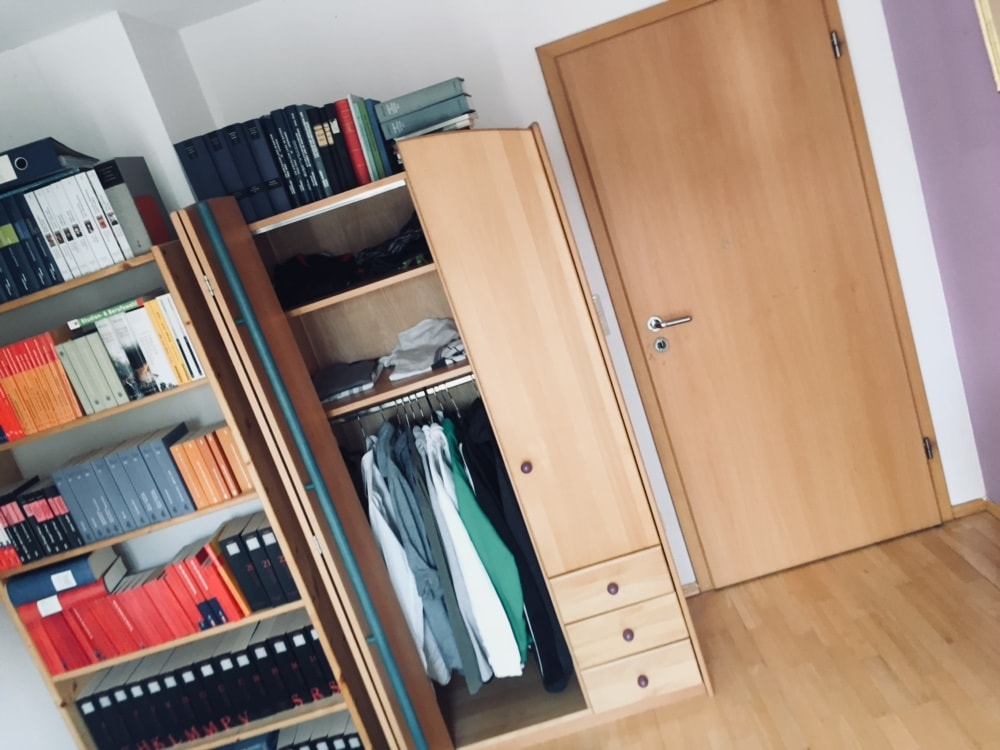
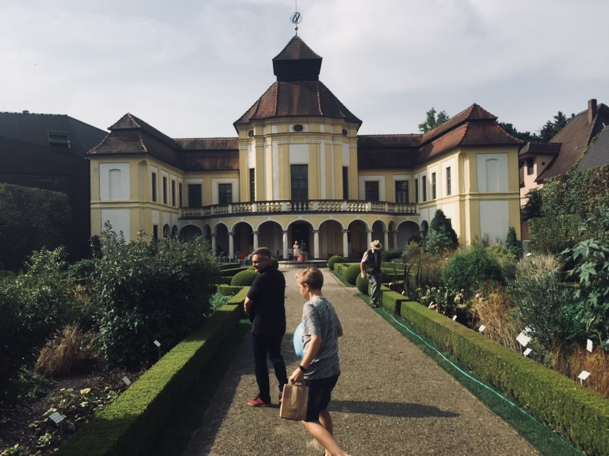
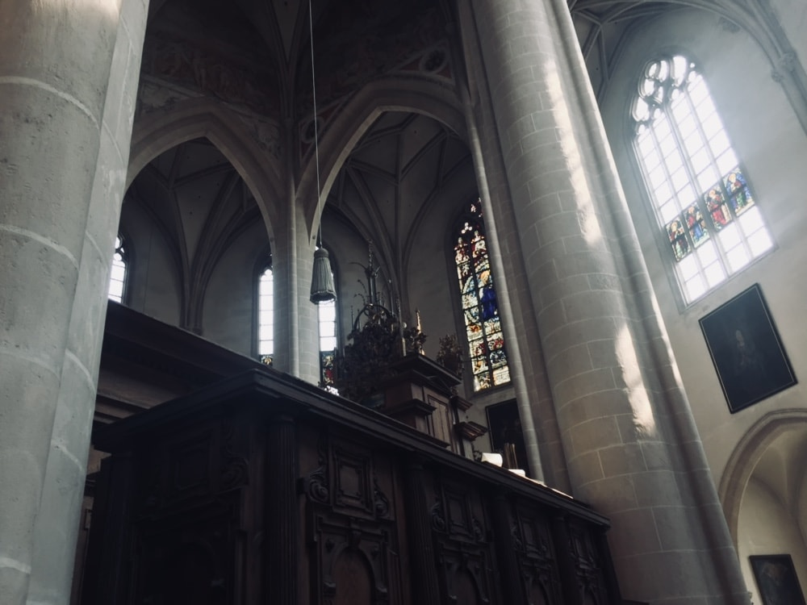
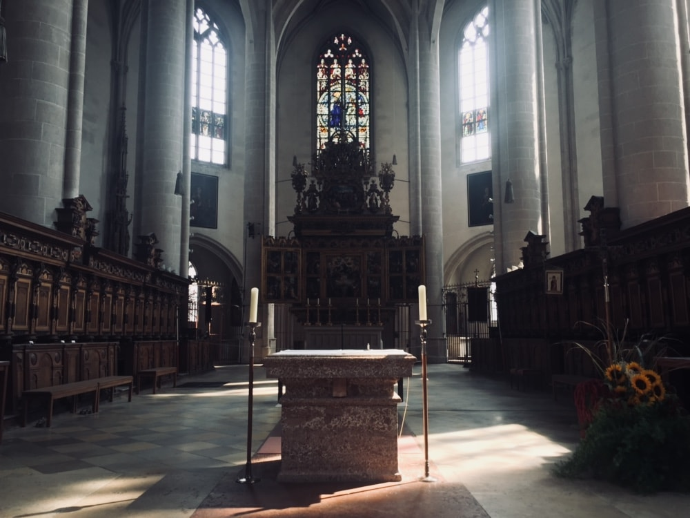
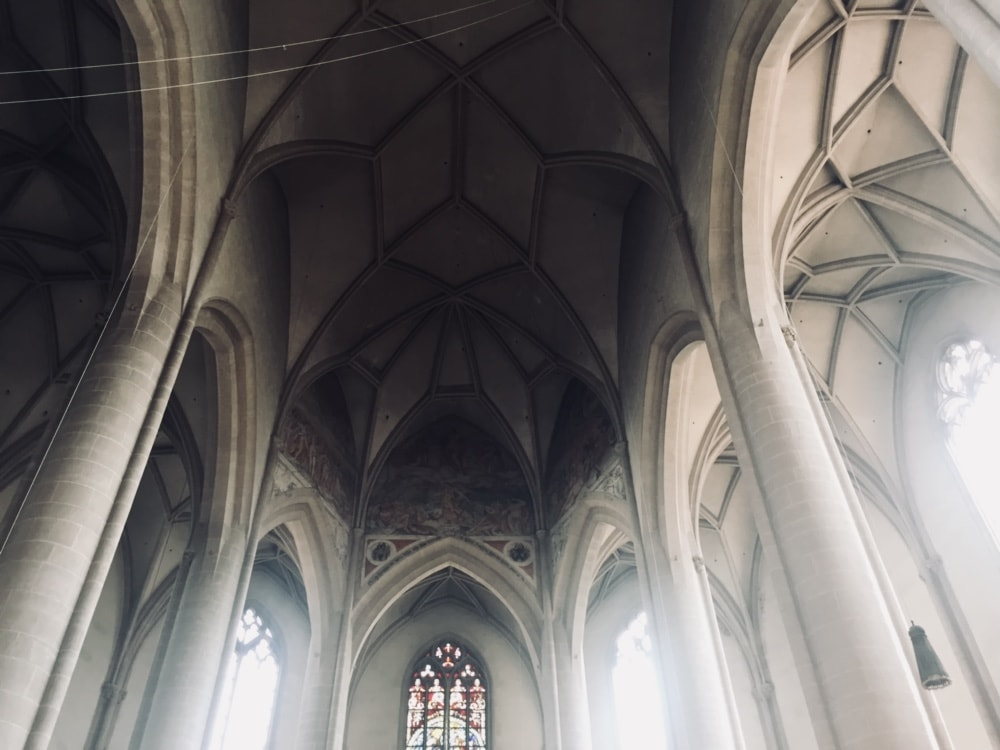
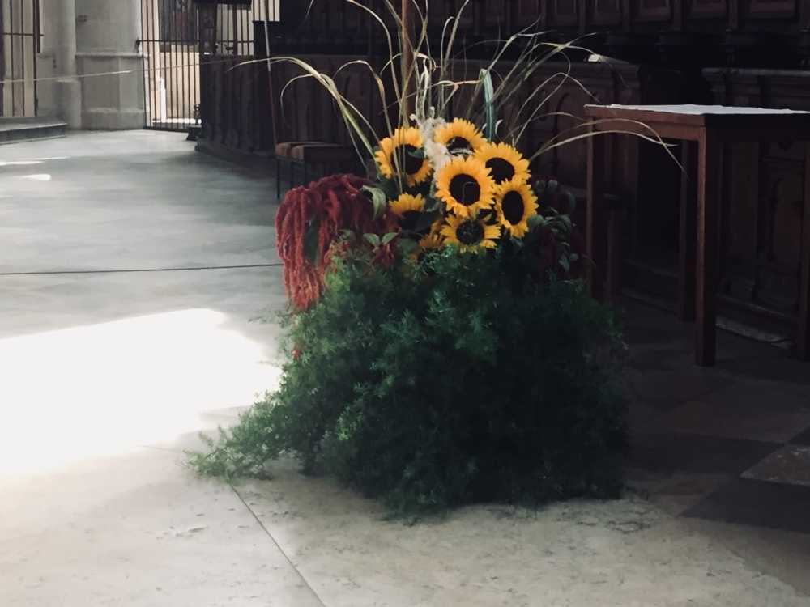

d. 28. august
Familien Schickel kom og hentede mig hos Huber ved ca. 16. tiden, jeg havde pakket min store 21 kilo tunge taske forinden så alt var klar til at jeg skulle videre.
Men der var en der ikke var klar til at jeg skulle afsted.. Det var Dominik. Han blev søreme ked af det, og sagde at jeg altid var hjerteligt velkommen i deres hjem. Det var selvfølgelig dejligt at høre.
Efter en lang køretur til Ingolstadt, ankom vi endelig. Familien Schickel bor i et nr. 52E. Så altså et rækkehus.
Til aftensmad fik vi pizza. Det var lækkert. Under maden diskuterede vi regler og alle de der kedelige ting. Men det var nu fint.
d. 7. September
Der er ikke sket så meget her på det seneste, og jeg er faktisk begyndt at blive træt af ferie. Men så er det godt at der er skole på Tirsdag.
I aftes var vi i biografen og se en rigtig bayersk film.
Alt er jo "rigtig bayersk" her nede i Bayern. Filmen hed "Sauerkraut koma" Det var var en krimi/komedie om en politibetjent og hans venner der finder et lig og noget, men udover det var der bare mange sjove jokes og sådan noget i. Den var nu meget god. Og nu spørger i alle sikkert: "Men Marius, Fortod du dog overhovedet noget af den "bayerske" film"
Svaret er nej..
Bare nej. Men! Jeg havde dog øjne, så jeg kunne sagtens følge med i handlingen.
d. 2. September
I dag stod vi op kl. 7.....
Vi skulle nemlig nå toget til München som gik kl. halv 9. Det var fordi vi skulle ind til noget kirke noget. Så da vi efter en time i tog var nået til München, fandt vi kirken og var til det der "kirke noget".
GUUUUD! hvor var det kedeligt. (Så i hvad jeg gjorde der? Jeg bragte gud på banen) Nå! Men det var en gammel mand som bare snakkede og snakkede løs i flere timer!!!
Bagefter fik vi os et velfortjent frokost måltid. Jeg fik noget der hed en "Käsespätzle".
Og det smagte mega godt. Det var sådan set bare pasta døbbet i ost. Ost OVERALT! Og så en smule salat.
Efter måltidet, tog vi hen til et slot med en masse gamle ting. Det var noget med en kongelig familie engang, som bestod af italienere, franskmænd og nogle tyskere. Og sådan noget. Det var svært at forstå kvinden i den tyske audio-guide. Meeen det var nu meget fint. Så fik vi set det, og så kan vi krydse "gamle kedelige slotte" af listen i ¨München". Så fik vi noget at drikke og tog hjem.
BILLEDER
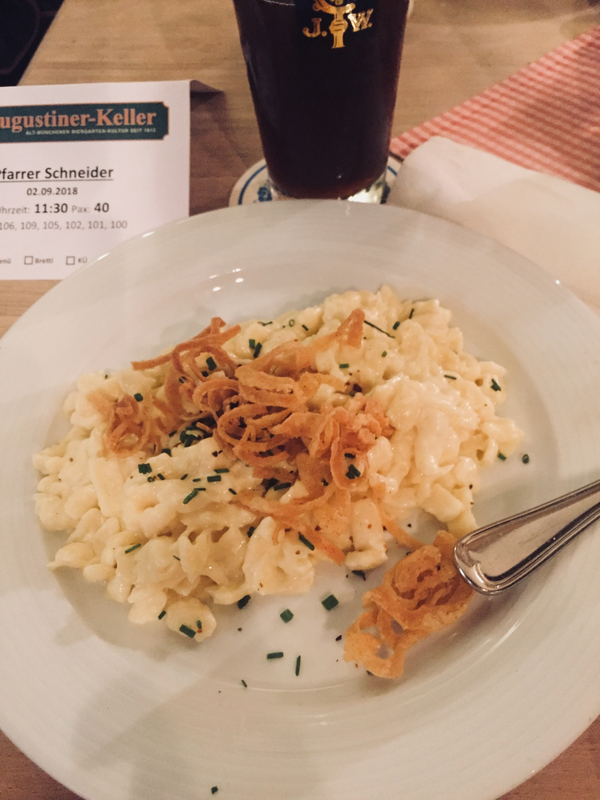 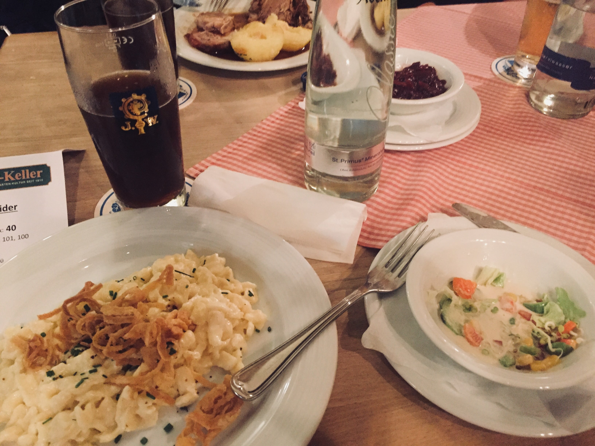 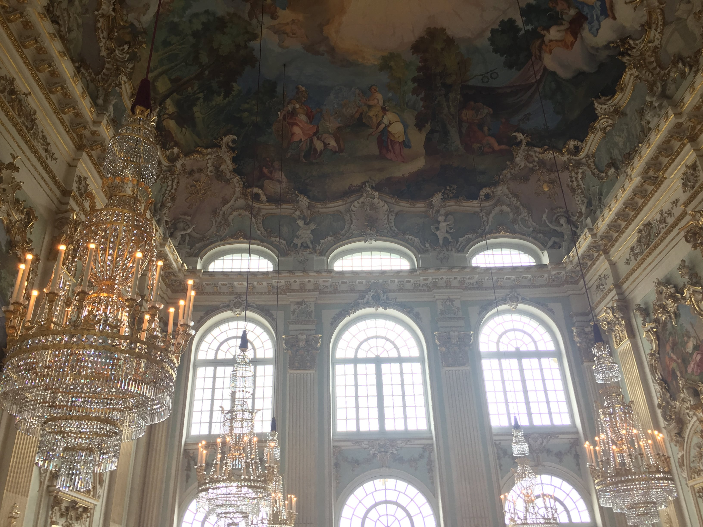 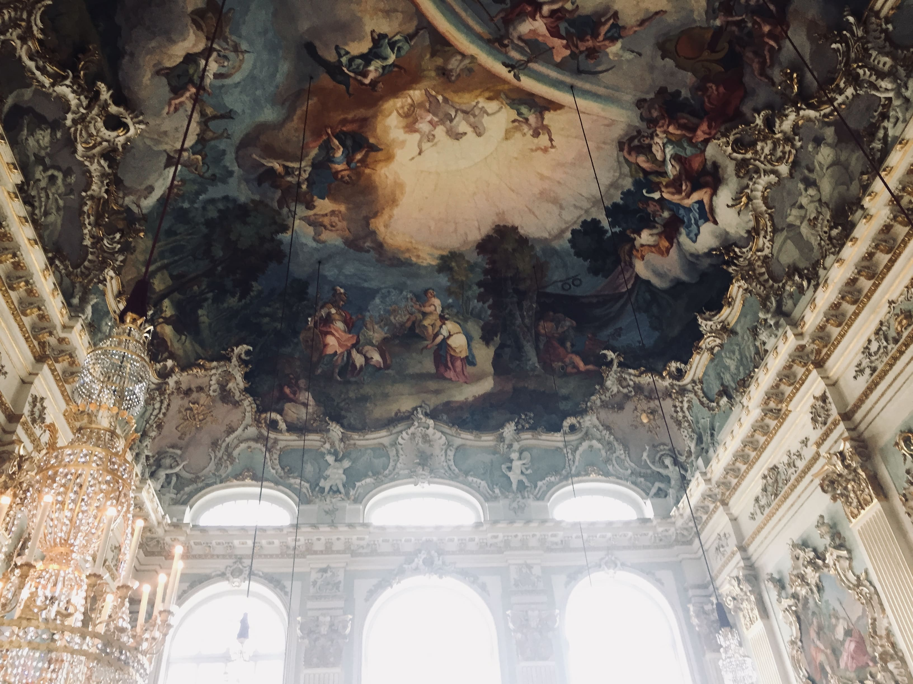d. 1. September
I morges kl. 05, var der en gigantisk eksplosion i Ingolstadt. Det var en gas-beholder 20 km. væk fra hvor vi bor, som sprang i luften. Hældigvis kom ingen til skade.
Jeg, var så blot den eneste i familien, eller nærmere det meste af byen der ikke hørte noget og bare sov igennem det. Jeg har nemlig været meget træt her på det seneste, det er måske alt det nye.. Eller sådan noget.
Så i eftermiddags var vi til noget meget bayersk traditionelt kuluralt stads. Du ved.. Hvor folk kommer og kigger på gammelt skrammel og drikker fadøl og spiser currywurst sammen.
Det var nu meget hyggeligt. Men koldt.. Vinteren har endelig langt om længe ramt Tyskland. Vi havde kun 14 grader!!
d. 31. august
I morges var vi inde i storcentret "west park" og købe hæfter ind til skole. Her får man dem jo ikke bare leveret gratis. Så fik vi en Döner, den var nu meget god.
Bagefter tog vi ind i byen og så viste de mig lidt rundt, jeg fik set en del af skolen og sådan noget. Det var nu meget fint.
Så om aftenen var vi ude og sætte valgplakater op rundt omkring i byen, fordi Mathias åbenbart skulle stille op til et eller andet valg-stads.
Det var så der at vi lige pludselig så noget røg stige op mod himlen, ikke så langt fra hvor vi var.
Da vi kom tættere fandt vi så ud af at der var en GIGANTISK ildebrand i et stort hus.
Det så helt vildt ud. Nå men da det var overstået og vi havde sat de fleste plakater op, kørte vi hjem og gik i seng.
d. 29. august
Dagen efter, havde Mathias,(Faren) en "historie-sightseeing" tur for små børn (8-12 år) Der kom Korbinian og jeg så med. Så spillede vi lidt fobold spiste frokost, og så tog Korbinian, mig, og to af hans venner ud og badede i Ingolstadt Freibad kl. 15.00.
Her har jeg lige lagt et par billeder ind af mit værelse og turen i Ingolstadt.
BILLEDER
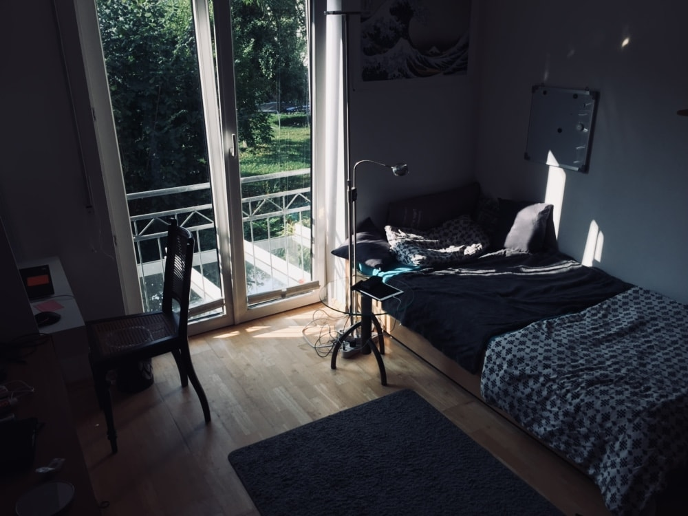 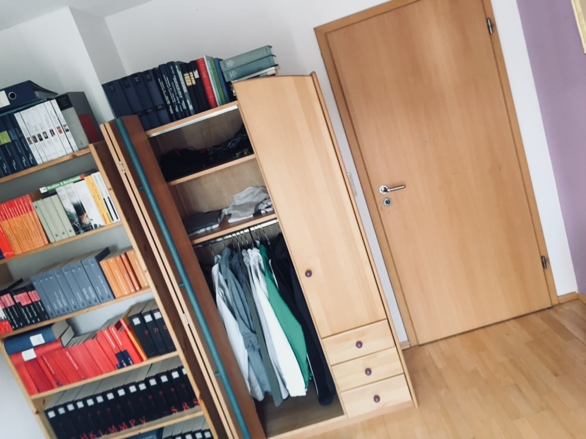 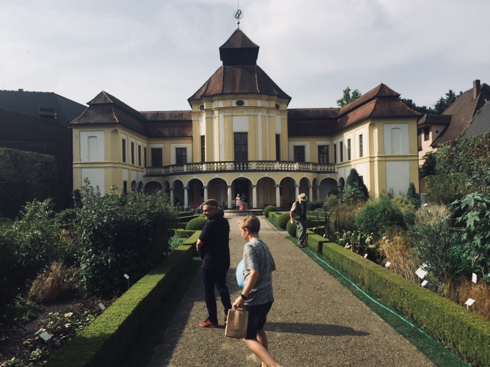 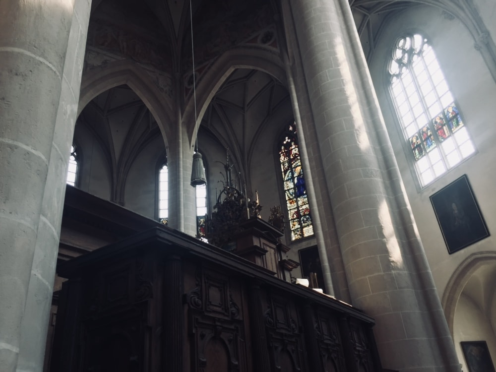 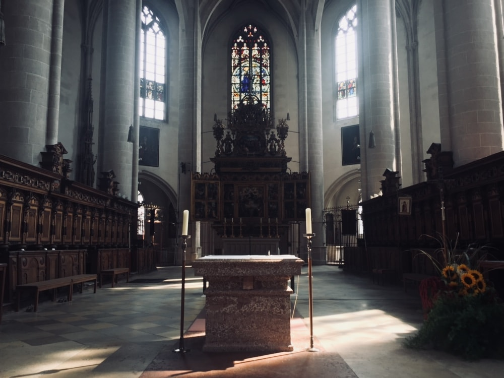 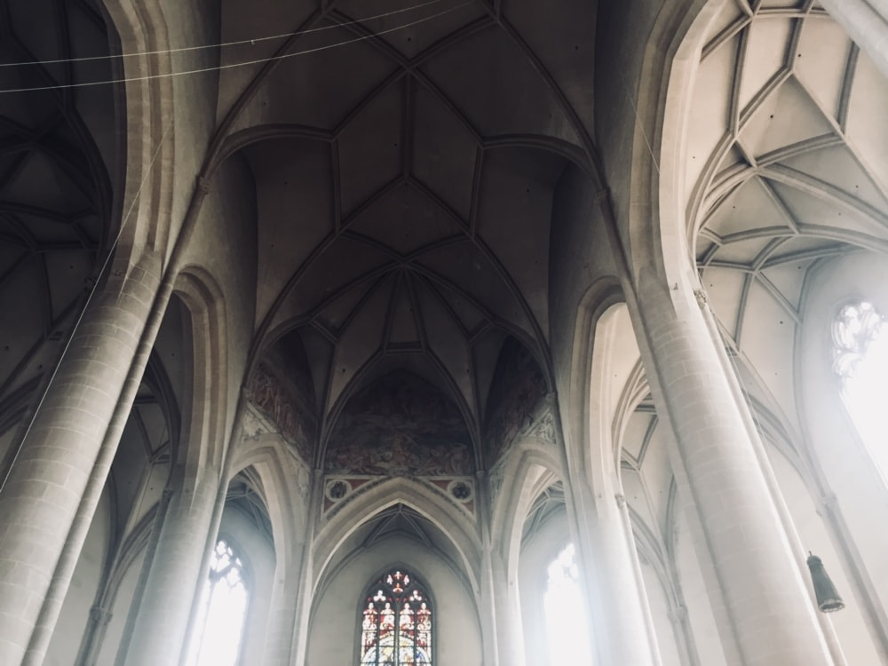 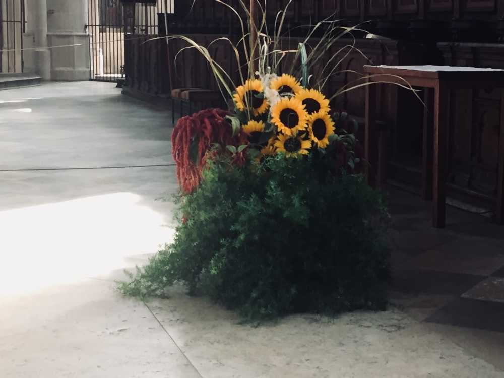